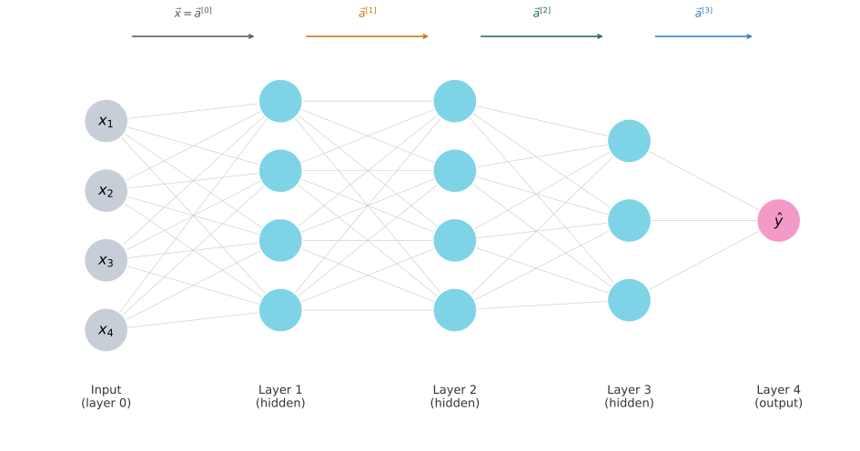

Neural Network Model
machine-learning
neural-networks
Forward pass math for a four-layer neural network, covering the general activation formula, the layer-index superscript notation, and the input-as-layer-zero convention.
You built the picture on Neural Networks Intuition. Neurons stack in layers, activations pass left to right, and hidden layers learn features nobody labeled. This page turns that picture into equations.
The fundamental building block is a layer of neurons. Understand one layer and you can stack them arbitrarily deep.
Superscript Notation for Layers
Whenever a network has more than one layer, every quantity (weight vectors, biases, activations) needs a layer label so you can tell them apart. The convention is a superscript inside square brackets.
\[ w_j^{[l]}, \quad b_j^{[l]}, \quad a_j^{[l]} \]
| Part | What it labels |
|---|---|
| Superscript \([l]\) | Layer number |
| Subscript \(j\) | Neuron (unit) index within that layer |
So \(a_2^{[3]}\) is the activation output of the second neuron in layer 3, \(\vec{w}_2^{[3]}\) is that neuron’s weight vector, and \(b_2^{[3]}\) is its bias.
By convention, the input layer is layer 0. When a network is described as having four layers, that count includes the hidden layers and the output layer but not the input layer.
Review Questions
1. What does the superscript \([3]\) mean in \(a_2^{[3]}\)?
TipAnswer
It labels this quantity as belonging to layer 3 of the network.
1. A network is described as having four layers. Does that count include the input layer?
TipAnswer
No. By convention, the layer count = hidden layers + output layer. The input layer (layer 0) is not counted.
1. What does \(b_2^{[3]}\) represent?
TipAnswer
The bias of the second neuron in layer 3.
Four-Layer Network
The diagram below shows a network with four layers in the conventional sense. Three of those are hidden layers (layers 1, 2, 3) and one is the output layer (layer 4). The input is layer 0.
The arrows across the top show the activation vector produced by each layer. Three things are worth noting.
- \(\vec{x}\) enters from the left and is also written \(\vec{a}^{[0]}\), so the same formula works for every layer.
- \(\vec{a}^{[1]}, \vec{a}^{[2]}, \vec{a}^{[3]}\) are the hidden-layer output vectors.
- \(a^{[4]}\) (a scalar here) is the network’s final prediction \(\hat{y}\).
Review Questions
1. How many hidden layers does this four-layer network have?
TipAnswer
Three. Layers 1, 2, and 3 are hidden layers. Layer 4 is the output layer.
1. What does \(\vec{a}^{[2]}\) represent?
TipAnswer
The vector of activations produced by layer 2. It is the output of hidden layer 2 and the input to hidden layer 3.
Zooming Into Layer 3
Let us look closely at how layer 3 computes its output. Layer 3 in this example has three neurons. It takes \(\vec{a}^{[2]}\) (the output of layer 2) as input and produces \(\vec{a}^{[3]}\).
Each neuron performs the same two-step logistic-regression-style computation you already know:
- Form the linear combination \(z = \vec{w} \cdot \vec{a}^{[2]} + b\).
- Pass it through the activation function \(g\) (the sigmoid for now).
Writing all three neurons explicitly:
\[ a_1^{[3]} = g\!\left(\vec{w}_1^{[3]} \cdot \vec{a}^{[2]} + b_1^{[3]}\right) \]
\[ a_2^{[3]} = g\!\left(\vec{w}_2^{[3]} \cdot \vec{a}^{[2]} + b_2^{[3]}\right) \]
\[ a_3^{[3]} = g\!\left(\vec{w}_3^{[3]} \cdot \vec{a}^{[2]} + b_3^{[3]}\right) \]
The three scalar outputs stack into the layer’s output vector:
\[ \vec{a}^{[3]} = \begin{bmatrix} a_1^{[3]} \\ a_2^{[3]} \\ a_3^{[3]} \end{bmatrix} \]
NoteKey pattern
Every neuron in layer 3 dot-products with the same input vector \(\vec{a}^{[2]}\). What differs is each neuron’s own weight vector \(\vec{w}_j^{[3]}\) and bias \(b_j^{[3]}\).
Review Questions
1. What vector is the input to layer 3?
TipAnswer
\(\vec{a}^{[2]}\), the activation vector produced by layer 2.
1. In the equation \(a_1^{[3]} = g(\vec{w}_1^{[3]} \cdot \vec{a}^{[2]} + b_1^{[3]})\), which layer does the dot product input come from?
TipAnswer
Layer 2, which is one layer before layer 3. The input to any layer \(l\) always comes from layer \(l-1\).
Fill in the Blanks
The equations for neurons 1 and 3 of layer 3 are given. Can you write the equation for neuron 2?
\[ a_1^{[3]} = g\!\left(\vec{w}_1^{[3]} \cdot \vec{a}^{[2]} + b_1^{[3]}\right) \]
\[ a_{?}^{[?]} = g\!\left(\vec{w}_{?}^{[?]} \cdot \vec{a}^{[?]} + b_{?}^{[?]}\right) \]
\[ a_3^{[3]} = g\!\left(\vec{w}_3^{[3]} \cdot \vec{a}^{[2]} + b_3^{[3]}\right) \]
Which option correctly fills in the blanks?
(A) \(\quad a_2^{[3]} = g\!\left(\vec{w}_2^{[3]} \cdot \vec{a}^{[2]} + b_2^{[3]}\right)\)
(B) \(\quad a_2^{[3]} = g\!\left(\vec{w}_2^{[3]} \cdot \vec{a}^{[3]} + b_2^{[3]}\right)\)
(C) \(\quad a_2^{[3]} = g\!\left(\vec{w}_2^{[3]} \cdot a_2^{[2]} + b_2^{[3]}\right)\)
TipAnswer
(A) is correct.
- The activation is the 2nd neuron of layer 3, so \(a_2^{[3]}\).
- The weights and bias belong to that same neuron: \(\vec{w}_2^{[3]}\) and \(b_2^{[3]}\) (superscript \([3]\), subscript \(2\)).
- The input is the full activation vector from the previous layer: \(\vec{a}^{[2]}\).
Option (B) uses \(\vec{a}^{[3]}\), which is the output of layer 3, not its input. A layer does not feed into itself.
Option (C) uses \(a_2^{[2]}\), which is a single scalar (the second activation of layer 2), not the full vector. The correct input is \(\vec{a}^{[2]}\), the entire output vector of layer 2.
General Formula
The same two-step pattern works for any layer \(l\) and any neuron \(j\):
\[ \boxed{a_j^{[l]} = g\!\left(\vec{w}_j^{[l]} \cdot \vec{a}^{[l-1]} + b_j^{[l]}\right)} \]
| Symbol | Meaning |
|---|---|
| \(a_j^{[l]}\) | Activation (output) of neuron \(j\) in layer \(l\) |
| \(\vec{w}_j^{[l]}\) | Weight vector of neuron \(j\) in layer \(l\) |
| \(b_j^{[l]}\) | Bias of neuron \(j\) in layer \(l\) |
| \(\vec{a}^{[l-1]}\) | Activation vector from the previous layer |
| \(g\) | Activation function (sigmoid so far) |
In the T-shirt example you saw on the intuition page, this formula applies to every hidden neuron and to the single output neuron.
In a neural network, \(g\) is also called the activation function, because it outputs the activation value. So far it is the sigmoid \(g(z) = \frac{1}{1+e^{-z}}\). On the activation functions page you will meet other choices.
Review Questions
1. In \(a_j^{[l]} = g(\vec{w}_j^{[l]} \cdot \vec{a}^{[l-1]} + b_j^{[l]})\), what does \(l-1\) represent?
TipAnswer
The previous layer. The input to any layer \(l\) is the output of layer \(l-1\).
1. What name does the course give to the function \(g\)?
TipAnswer
The activation function. For now it is the sigmoid; other choices appear in week 2.
1. What distinguishes neuron \(j=1\) from neuron \(j=2\) in the same layer?
TipAnswer
They have different weight vectors (\(\vec{w}_1^{[l]}\) vs \(\vec{w}_2^{[l]}\)) and different biases (\(b_1^{[l]}\) vs \(b_2^{[l]}\)). The input \(\vec{a}^{[l-1]}\) is the same for every neuron in a layer.
1. What is the expression for calculating the activation of the third neuron in layer 2?
(A) \(\quad a_3^{[2]} = g\!\left(\vec{w}_3^{[2]} \cdot \vec{a}^{[1]} + b_3^{[2]}\right)\)
(B) \(\quad a_3^{[2]} = g\!\left(\vec{w}_3^{[2]} \cdot \vec{a}^{[2]} + b_3^{[2]}\right)\)
(C) \(\quad a_3^{[2]} = g\!\left(\vec{w}_2^{[3]} \cdot \vec{a}^{[1]} + b_2^{[3]}\right)\)
(D) \(\quad a_3^{[2]} = g\!\left(\vec{w}_2^{[3]} \cdot \vec{a}^{[2]} + b_2^{[3]}\right)\)
TipAnswer
(A) is correct.
- Neuron 3 in layer 2 is written \(a_3^{[2]}\): superscript \([2]\) for the layer, subscript \(3\) for the neuron.
- Its weights and bias carry that same layer and neuron index: \(\vec{w}_3^{[2]}\) and \(b_3^{[2]}\).
- The input comes from the previous layer, layer 1: \(\vec{a}^{[1]}\).
Option (B) uses \(\vec{a}^{[2]}\) as the input, which is layer 2’s own output, not its input.
Options (C) and (D) swap the superscript and subscript, using \(\vec{w}_2^{[3]}\) and \(b_2^{[3]}\) (layer 3’s second neuron) instead of \(\vec{w}_3^{[2]}\) and \(b_3^{[2]}\) (layer 2’s third neuron). (D) additionally repeats the same input mistake as (B).
Input Layer Convention
To make the formula work at the very first hidden layer (layer 1), we rename the input feature vector:
\[ \vec{a}^{[0]} = \vec{x} \]
Now layer 1’s neurons compute
\[ a_j^{[1]} = g\!\left(\vec{w}_j^{[1]} \cdot \vec{a}^{[0]} + b_j^{[1]}\right) \]
which is exactly the general formula with \(l=1\). No special case needed for the first layer.
Review Questions
1. Why is \(\vec{x}\) also written as \(\vec{a}^{[0]}\)?
TipAnswer
So the general formula \(a_j^{[l]} = g(\vec{w}_j^{[l]} \cdot \vec{a}^{[l-1]} + b_j^{[l]})\) applies at every layer, including the first hidden layer, without any special case.
1. For layer 1, what is \(\vec{a}^{[l-1]}\)?
TipAnswer
\(\vec{a}^{[0]} = \vec{x}\), the raw input features.
Binary Prediction
After the last layer produces the network output \(a^{[L]}\) (where \(L\) is the total number of layers), you have a number between 0 and 1 from the sigmoid.
If you want a hard yes-or-no prediction:
\[ \hat{y} = \begin{cases} 1 & \text{if } a^{[L]} \geq 0.5 \\ 0 & \text{if } a^{[L]} < 0.5 \end{cases} \]
This is the same threshold rule you used in logistic regression. The step is optional. Sometimes you want the probability itself, not just the class label.
Review Questions
1. When do you threshold at 0.5, and when might you skip it?
TipAnswer
Threshold when you need a binary class label (1 or 0). Skip it when you need the probability (for example to rank items or feed another system).
1. What symbol denotes the total number of layers in a network?
TipAnswer
\(L\). The output of the last layer is \(a^{[L]}\).
What You Can Now Compute
With this notation, you know how to compute the activation values of any layer in a neural network as a function of the parameters and the activations of the previous layer. That is the foundation for turning a trained network into predictions.
Review Questions
1. Given trained weights and biases, what can you compute for every layer?
TipAnswer
The activation vector of that layer, using \(a_j^{[l]} = g(\vec{w}_j^{[l]} \cdot \vec{a}^{[l-1]} + b_j^{[l]})\) for each neuron \(j\).